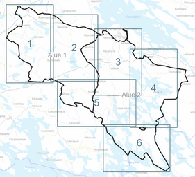

Asiakirjat · Heinävesi
Heinäveden läntisten alueiden rantayleiskaavamuutos
Kaavaehdotusvaiheen asiakirjat 30.10.2026.
KaavaehdotusKaavaehdotusasiakirjat
Kaavaehdotus 30.10.2026
Kaavakartat
Kaava-alue on jaettu kuuteen karttalehteen. Kaavakartta 7 osoittaa kumottavat alueet. Oheinen indeksikartta näyttää karttalehtijaon.

Kaavakartta 1
Kaavakartta 2
Kaavakartta 3
Kaavakartta 4
Kaavakartta 5
Kaavakartta 6
Kaavakartta 7 – kumottavat alueet
Kaavamääräykset ja selostus
Kaavamerkinnät ja -määräykset
Kaavan sitovat merkinnät ja määräykset kaava-alueelle.
Kaavaselostus
Kaavan taustaselvitykset, tavoitteet ja vaikutusten arviointi.
Liitteet
Osallistumis- ja arviointisuunnitelma
Kuvaus kaavaprosessista, osallistumismahdollisuuksista ja vaikutusten arvioinnista.
Kaavamuutoskohteet
Kooste maanomistajien esittämistä muutosaloitteista ja kaavoittajan kannanotoista.
Mitoitusperiaatteiden kooste
Rakennusoikeuden mitoituksen periaatteet kaava-alueella.
Maanomistajakirje norppasiirroista
Kirje maanomistajille saimaannorpan pesimäalueiden vuoksi siirrettävistä rakennuspaikoista.
Luonto- ja maisemaselvitys
Kaava-alueen luontoselvitys 2026 (Luonto Pihlaja Oy).
Arkeologinen inventointi
Kaava-alueen arkeologinen inventointi 2026.
Vastineet kaavaluonnoksesta annettuihin lausuntoihin
Yhteenveto kaavaluonnoksen lausunnoista ja kaavoittajan vastineet.
Rakennetun kulttuuriympäristön selvitys
Kaava-alueen rakennetun kulttuuriympäristön inventointi ja arvotus.